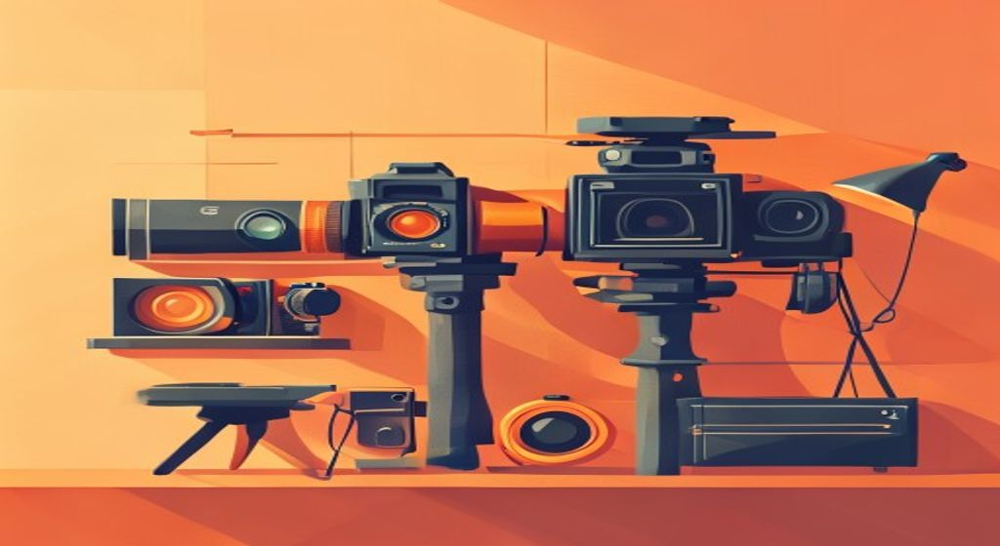
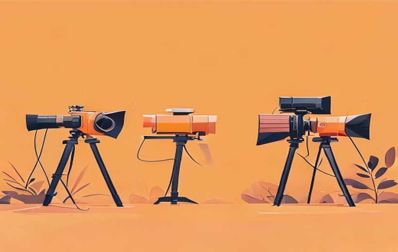
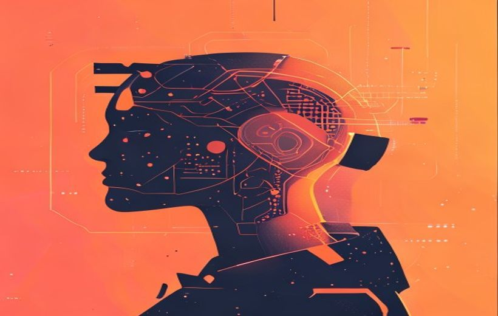

Preproducción, producción y postproducción; software profesional; sonido avanzado; VFX; y cómo la IA generativa está cambiando el vídeo para siempre.

De la cámara al render: producir y postproducir vídeo.
Hacer un vídeo profesional es como construir una casa: primero diseñas los planos (preproducción), luego la edificas (producción) y al final la pintas y decoras (postproducción) — y hoy la IA hace de herramienta que acelera cada fase.
🧠 Los conceptos
Despliega cada tarjeta, léela con calma y márcala como entendida. La barra de arriba irá subiendo.
Todo proyecto audiovisual —desde un anuncio de TikTok hasta una película de Netflix— pasa por tres etapas. En qué fase estés determina qué herramientas usas y qué errores puedes cometer.

Las 3 fases: preproducción, producción y postproducción.
| Fase | ¿Qué se hace? | Herramientas típicas |
|---|---|---|
| Preproducción | Guion, storyboard, casting, localización, planning de rodaje, presupuesto | Word, Google Docs, Milanote, storyboard IA (Midjourney) |
| Producción | Rodaje: cámara, luces, sonido en directo, dirección de actores | Cámara (ARRI, Sony FX3, iPhone), micrófono (pértiga, lavalier), gimbal |
| Postproducción | Montaje, color grading, VFX, mezcla de sonido, render y exportación | DaVinci Resolve, Adobe Premiere, After Effects, Pro Tools, Dolby Atmos |
Ecosistema tecnológico — «la producción audiovisual contemporánea se apoya en un ecosistema tecnológico que integra dispositivos de captura, software de edición, técnicas avanzadas de sonido y procesos de postproducción que transforman una idea en una obra final lista para ser distribuida».
Engranaje coordinado / sistema interdependiente — las herramientas «no operan de forma aislada, sino como un engranaje coordinado en el que cada etapa depende de la calidad y la coherencia de la anterior»; cada elemento «forma parte de un sistema interdependiente, en el que cualquier decisión repercute directamente en el resultado final».
Flujo entre rodaje, edición, sonido y postproducción — así nombra el PDF las etapas: «una producción que optimiza el flujo entre rodaje, edición, sonido y postproducción no solo ahorra tiempo y recursos, sino que también abre espacio para la experimentación creativa».
La cámara y el objetivo no son simples herramientas de grabación. Son herramientas de narración: cada decisión técnica cambia cómo el espectador siente la escena.
| Categoría | Ejemplos | Cuándo se usa |
|---|---|---|
| Cine digital alta gama | ARRI Alexa, RED, Sony Venice | Películas, spots de TV premium |
| Mirrorless / DSLR | Sony FX3, Canon R5, Panasonic GH7 | Documentales, YouTube, contenido de marca |
| Cámara de acción | GoPro, Insta360 | Deportes, primera persona, exteriores |
| Smartphone | iPhone, Pixel | Reels, TikTok, vídeo vertical, UGC |
Lentes y su efecto emocional:
Instrumentos creativos capaces de modelar la narrativa visual — «las cámaras y lentes han dejado de ser simples dispositivos de grabación para convertirse en instrumentos creativos capaces de modelar la narrativa visual». Su elección «no es únicamente una decisión técnica, sino un componente esencial de la narrativa visual».
Tipo de sensor, resolución, rango dinámico y sensibilidad ISO — «no son simples especificaciones técnicas, sino decisiones narrativas». El rango dinámico «permite preservar información en sombras y zonas iluminadas». Las siglas ISO vienen de la International Organization for Standardization y se adoptan «por derivar del griego isos, que significa “igual”»; determina cómo responde la cámara con poca luz.
Apertura del diafragma y bokeh — un lente luminoso con apertura amplia genera «un desenfoque selectivo que dirige la atención del espectador»; «esta técnica, conocida como bokeh, es muy utilizada para aislar al personaje del fondo». La distorsión, la aberración cromática o el viñeteo «pueden convertirse en herramientas narrativas si se utilizan de forma intencionada» (lente vintage = nostalgia o calidez).
El montaje es donde el material en bruto se convierte en relato. El editor decide el ritmo, las transiciones y la atmósfera. La edición digital no lineal (NLE) permite experimentar sin destruir el material original — como trabajar con capas en Photoshop.
| Programa | Su punto fuerte | Quién lo usa |
|---|---|---|
| Adobe Premiere Pro | Integración con After Effects, Photoshop y todo el ecosistema Adobe | Agencias, YouTube, contenido digital |
| DaVinci Resolve | El mejor etalonaje del mercado; versión básica gratuita | Cine indie, coloristas profesionales |
| Final Cut Pro | Velocidad en Mac, interfaz muy ágil | YouTubers, freelancers con Mac |
| Avid Media Composer | Estándar Hollywood: robustez y flujos colaborativos complejos | Grandes producciones, broadcast TV |
Para redes sociales y equipos pequeños: CapCut (el más popular para TikTok/Reels), Descript (editas el vídeo editando el texto de la transcripción), Runway y Veed.io (IA integrada).
Software especializado para edición creativa digital — título oficial del epígrafe 8.2. Es «el núcleo donde convergen todas las piezas de una producción audiovisual» y, «más que una herramienta técnica, es un espacio de construcción narrativa en el que convergen la visión artística, la planificación del rodaje y las posibilidades tecnológicas».
Edición lineal analógica vs. edición digital (sistemas no lineales) — «a diferencia de la edición lineal analógica, que limitaba las posibilidades de manipulación, la edición digital ofrece una flexibilidad prácticamente ilimitada [...] sin comprometer la integridad del material original». Los «sistemas no lineales organizan y manipulan grandes volúmenes de material con precisión» incluso ante cambios de última hora.
Flujo de trabajo integrado — DaVinci Resolve destaca por «su potente módulo de corrección de color y su flujo de trabajo integrado que combina edición, etalonaje, efectos visuales y sonido»; Avid Media Composer es «un estándar en producciones cinematográficas y televisivas por su robustez y capacidad para gestionar flujos colaborativos complejos».
El sonido se infravalora, pero determina la experiencia emocional tanto o más que la imagen. Un vídeo con imagen mediocre y sonido profesional funciona mejor que al revés.
Las 4 fases del sonido:
| Elemento | Qué es | Truco |
|---|---|---|
| Diálogo | Lo principal: debe entenderse siempre | Siempre en el centro del mix |
| Música | Tono emocional de la escena | Sidechain: baja sola cuando habla alguien |
| Efectos (FX) | Pasos, puertas, golpes… muchos son fabricados (foley) | Se «inventan» en estudio |
| Ambiente | Fondo continuo (tráfico, viento, pájaros) | Sin él la escena «suena a vacío» |
Formatos envolventes:
Técnicas avanzadas de sonido y mezcla digital — título oficial del epígrafe 8.3. El sonido «no es un simple acompañante de la imagen, sino un elemento narrativo con la capacidad de transformar la percepción emocional de una escena».
Mezcla de sonido digital — «integración equilibrada de distintos elementos: diálogos, efectos sonoros, música y ambientes». Herramientas esenciales: la ecualización «ajusta las frecuencias para que cada elemento tenga su propio rango y no compita con otros» y la compresión «controla la dinámica». El sidechain son las técnicas «que reducen automáticamente el volumen de la música cuando entran los diálogos».
Masterización, sound layering y tecnologías inmersivas — la masterización incluye «la normalización de niveles, el control de picos y la adaptación a estándares internacionales de difusión». El «sound layering —o capas de sonido—» combina múltiples elementos para crear «una experiencia más rica y verosímil». Las «tecnologías inmersivas como Dolby Atmos, DTS:X o formatos binaurales» sitúan sonidos «en un espacio tridimensional realista». El PDF también habla de paisajes sonoros y diseño sonoro (no usa la palabra «foley»).
El etalonaje —también llamado color grading o corrección de color— es el proceso de ajustar el color y la luz de todas las tomas para que: (1) sean coherentes entre sí y (2) transmitan la atmósfera emocional deseada.
No es simplemente «poner un filtro». Es una disciplina entera: el colorista puede convertir un mediodía luminoso en un atardecer cálido, o dar a una comedia romántica ese aspecto «pastel» tan reconocible.
¿Por qué se graba en LOG o RAW? Porque captura más información (imagen plana, sin contraste), que luego el colorista moldea a placer. Es como disparar en RAW con una cámara fotográfica.
Etalonaje (también llamado color grading o corrección de color) — definición textual para el examen: «desempeña un papel esencial como proceso final de ajuste del color y la luz para unificar el aspecto visual de todas las tomas y generar una atmósfera estética o emocional específica».
Integración en una misma plataforma — «la integración de módulos de efectos, etalonaje y mezcla de sonido dentro de una misma plataforma agiliza los flujos de trabajo y reduce la dependencia de procesos fragmentados» (Robles, 2019). DaVinci Resolve «ha ganado terreno por su potente módulo de corrección de color».
Los efectos visuales (VFX) son mucho más que explosiones de Hollywood. Incluyen cualquier elemento que se añada, modifique o elimine digitalmente después del rodaje. Su objetivo no es impresionar: es que no se noten.
Software VFX: After Effects (Adobe, VFX nivel medio), Nuke (estándar de industria para compositing pro), Blender (3D gratuito y potente), Houdini y Maya (simulaciones complejas).
Efectos visuales y procesos de postproducción profesional — título oficial del epígrafe 8.4. Son «mucho más que un recurso estético: representan una extensión del lenguaje narrativo, capaz de expandir las posibilidades expresivas y técnicas de una obra audiovisual».
Integración invisible — «su verdadero valor radica en su integración invisible, en el modo en que complementan la imagen real para transmitir emociones, ideas y atmósferas sin distraer de la esencia de la historia».
Control de calidad técnico y narrativo / funcionalidad narrativa — antes de la entrega final se revisa «también su funcionalidad narrativa: un efecto puede ser visualmente impecable, pero restar credibilidad o coherencia a la historia si no está justificado». Este «filtro creativo» evita que los recursos digitales se usen «como meros adornos».
La inteligencia artificial generativa ya no solo ayuda en la edición — ahora crea vídeo desde cero. Esto cambia las reglas del sector de forma tan profunda como lo hizo la cámara de vídeo digital en los años 90.

La IA generativa ya crea vídeo (Sora y similares).
| Herramienta | Empresa | ¿Qué hace? |
|---|---|---|
| Sora | OpenAI | Genera vídeo realista desde texto (hasta 60 s). El más potente en calidad fotorrealista. |
| Runway Gen-3 | Runway ML | Generación de vídeo + edición IA + motion brush. Muy usado en publicidad. |
| Veo | Google DeepMind | Vídeo de alta calidad, integrado con YouTube. |
| Kling | Kuaishou (China) | Alta fidelidad, movimientos naturales, disponible en occidente. |
| Pika Labs | Pika | Rápido y accesible, bueno para animar imágenes. |
Otras aplicaciones de IA en audiovisual:
La IA desempeña un papel central en la postproducción visual — «permite automatizar tareas complejas como la corrección de color, el seguimiento de objetos, la limpieza de audio, la generación de fondos, e incluso la edición narrativa basada en patrones de atención». Ojo: el PDF escrito no cita Sora, Veo ni Kling por nombre; sí menciona como plataformas de edición accesibles a «CapCut, PowerDirector, Runway, Veed.io o Descript».
Versiones personalizadas / personalización dinámica de contenidos — «la IA también facilita la creación de versiones personalizadas de una misma pieza para distintos públicos o plataformas, adaptando el ritmo, el formato y los elementos visuales según los hábitos de consumo».
Colaboración, no competencia — «la inteligencia artificial amplifica las capacidades del editor, liberándolo de tareas repetitivas»; pero «carece de intuición narrativa, sensibilidad estética y comprensión contextual»: «el editor humano sigue siendo quien define el tono, el ritmo emocional y la intención comunicativa de cada pieza».
El render es el proceso por el que el ordenador procesa todas las capas (vídeo, efectos, color, sonido) y genera el archivo final. La exportación es adaptar ese archivo al canal donde se va a distribuir. Un error aquí puede tirar meses de trabajo.
| Destino | Resolución | Aspecto | Frame rate |
|---|---|---|---|
| Cine | 4K DCI (4096×2160) | 2.39:1 o 1.85:1 | 24 fps |
| TV broadcast | Full HD (1920×1080) | 16:9 | 25 fps (Europa) / 30 fps (EE.UU.) |
| YouTube | 4K (3840×2160) ideal | 16:9 | 30 / 60 fps |
| TikTok / Instagram Reels | 1080×1920 | 9:16 (vertical) | 30 fps |
| Instagram feed | 1080×1080 o 1080×1350 | 1:1 o 4:5 | 30 fps |
| Netflix / Streaming premium | 4K HDR | 16:9 | 24–25 fps |
Errores típicos que destrozan un proyecto: compresión excesiva (vídeo pixelado), perfil de color incorrecto (los colores cambian al publicar), frame rate mal ajustado (el vídeo va a cámara lenta o rápida sin querer).
Renderizado y exportación en función del medio de exhibición — «el formato de archivo, la resolución, el perfil de color, la tasa de fotogramas y la relación de aspecto se ajustan según el canal de distribución: cine, televisión, plataformas de streaming, redes sociales o entornos interactivos». Ejemplo textual: TV = «resolución Full HD (1920×1080), tasa de fotogramas de 25 o 30 fps y perfil de color Rec.709».
Decisión estratégica — «la exportación no es un trámite final, sino una decisión estratégica que afecta directamente la eficacia comunicativa del contenido» (Jódar Marín, 2025).
Errores técnicos en esta etapa — «una compresión excesiva, un perfil de color incorrecto o una tasa de fotogramas mal ajustada» pueden «comprometer meses de trabajo»; por eso «la supervisión, las pruebas de visionado y la adaptación específica a cada plataforma son imprescindibles antes de la distribución».
Este es el principio más importante del tema: toda la tecnología —cámaras, software, VFX, IA— solo tiene sentido si está al servicio de la historia y del mensaje. Un efecto espectacular que no aporta nada narrativo es un error, no una virtud.
¿Qué implica esto en la práctica?
«La tecnología es un medio, no un fin» — cita completa para el examen: «su verdadero potencial se activa cuando está al servicio de una idea clara y de una ejecución sensible al contexto y al público objetivo».
La tecnología no sustituye el criterio creativo, lo amplifica — «la tecnología no sustituye el criterio creativo, sino que lo amplifica, siempre que se utilice con un propósito definido y en sintonía con la estrategia de comunicación».
Recurso gratuito — «la clave está en que cada efecto esté al servicio de la historia y no se convierta en un recurso gratuito que distraiga del núcleo narrativo».
📖 Vocabulario del examen
Cómo lo digo fácil → cómo lo llama el PDF (y como saldrá en el examen).
| En fácil | Término oficial del PDF |
|---|---|
| el «kit» completo de hacer vídeo (cámara + programas + sonido) | ecosistema tecnológico que funciona como un engranaje coordinado / sistema interdependiente |
| poner el color / unificar el look de las tomas | etalonaje (también llamado color grading o corrección de color): «proceso final de ajuste del color y la luz» |
| fondo desenfocado para que destaque el sujeto | bokeh — «desenfoque selectivo que dirige la atención del espectador» |
| cuánto detalle aguanta la cámara en luces y sombras | rango dinámico — «preservar información en sombras y zonas iluminadas» |
| sensibilidad a la luz de la cámara | sensibilidad ISO — de la International Organization for Standardization, del griego isos («igual») |
| editar sin destruir el material original | edición digital / sistemas no lineales, frente a la edición lineal analógica |
| la música baja sola cuando alguien habla | sidechain — «reducen automáticamente el volumen de la música cuando entran los diálogos» |
| sonidos de fondo (tráfico, pájaros, viento…) | ambientes / paisajes sonoros — «dan contexto y verosimilitud a las imágenes» |
| montar un sonido con varias capas (motor + ruedas + viento) | sound layering — «o capas de sonido» |
| dejar el audio listo y consistente para cada plataforma | masterización — «normalización de niveles, control de picos y adaptación a estándares internacionales de difusión» |
| fps / formato vertical u horizontal | tasa de fotogramas y relación de aspecto (junto a resolución y perfil de color, p. ej. Rec.709) |
| la IA ayuda pero no manda | «la tecnología no sustituye el criterio creativo, sino que lo amplifica»; «la tecnología es un medio, no un fin» |
🃏 Flashcards
Toca cada tarjeta para girarla. Tapa la definición con la mano y comprueba si te la sabes.
✅ Test rápido
5 preguntas tipo examen. Elige una opción y te corrige al momento con la explicación.
⭐ Preguntas de autoevaluación
El PDF del Tema 8 no incluye una diapositiva de autoevaluación formal. Las siguientes son 3 preguntas de práctica elaboradas a partir de los contenidos clave del tema, al nivel y formato del examen.
Herramientas principales:
Impacto en el creador: la IA amplifica las capacidades del profesional liberándolo de tareas repetitivas (subtitulado, eliminación de silencios, estabilización, color matching) y permitiéndole generar versiones personalizadas para distintas plataformas de forma automatizada. Sin embargo, no sustituye el criterio narrativo, la sensibilidad estética ni la intención comunicativa: solo el creador humano puede decidir qué plano transmite una emoción concreta o qué ritmo conecta con el público objetivo.
Las 4 fases del sonido:
Formatos envolventes:
Relación con la narrativa: el sonido guía la atención (un crujido anticipa el peligro), genera atmósferas (el silencio antes de un impacto puede ser más aterrador que el propio impacto) y refuerza el tono emocional (la música sidechain apoya sin competir con el diálogo). El objetivo es que el espectador sienta el sonido sin ser consciente de él.